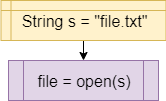

One of the major features of a modern computer is the ability to store and retrieve data from the computer’s file system. So, we need to be able to access the file system in our code in order to build useful programs. Thankfully, most modern programming languages include a way to do this.
I/O in Flowcharts & Pseudocode
Most operations working with files in code take the form of method calls. So, we will primarily use the call block to represent operations on files:
| Operation | Flowchart | Pseudocode |
|---|---|---|
| Open File |  | |
| Read from File | |
|
| Write to File | |
I/O in Java
Let’s review the syntax for working with files in Java.
Reading Files
To open a file in Java, we can use methods from the NIO library. Here is an example:
In this example, the program will try to open a file provided as the first command-line argument. If no argument is provided, it will automatically read from standard input instead. However, if an argument is provided, it uses Paths.get() to get a reference to that file and tries to open it. In addition, we can use a Try with Resources statement to make sure the file is properly closed once it is open.
Once we have opened the file, we can read the file just like we would any other input:
Writing Files
To write to a file, we must open it a different way. In Java, we can use a BufferedWriter to write data to a file:
This example shows to how to open a file for writing by creating a BufferedWriter object inside of a Try with Resources statement. It also lists several of the common exceptions and their cause.
Resources
- BufferedWriter on the Java 8 API Documentation
- StandardOpenOption on the Java 8 API Documentation
- Files in the Java 8 API Documentation
- Paths in the Java 8 API Documentation
- Java File I/O Tutorial from Oracle’s Java Tutorials